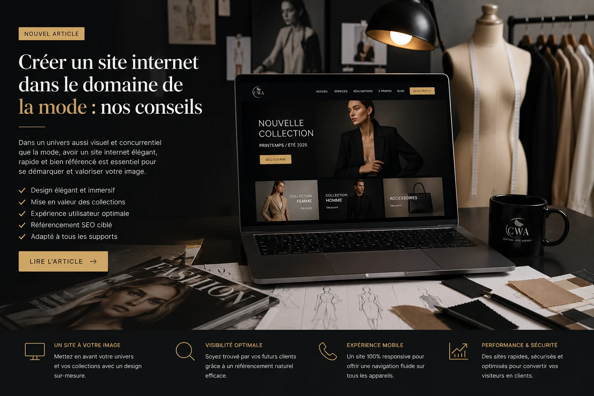

Par Central Web Agency · Mis à jour le

Dans les métiers de la mode, de la beauté et de l’image à Lyon, le contenu du site dépend de ce que votre visiteur doit décider. Mettez le book ou le portfolio au premier plan pour une candidature. Pour une prestation en salon ou en studio, rendez clairs les services, les tarifs et les modalités de contact.
Choisir les contenus selon son métier
Book de mannequin
Sélectionnez des photos représentatives et classez-les selon les usages, par exemple portrait, beauté ou éditorial. Indiquez les informations utiles au casting, les zones où vous travaillez et un contact que vous consultez.
Portfolio de styliste ou de créateur textile
Présentez votre démarche et quelques projets avec leur contexte : défilé, commande ou collection. Indiquez votre rôle et comment vous soumettre un projet.
Galerie de photographie de mode
Distinguez les séries, par exemple éditorial, portrait et commercial. Pour chaque série, quelques images accompagnées de leur contexte aident à comprendre votre approche. Précisez le type de commande et les informations à transmettre pour un devis. La fiche site pour photographe détaille les formats et fonctions possibles.
Prestations de beauté et de coiffure
Affichez les prestations, les prix ou fourchettes utiles, le lieu et le moyen de prendre rendez-vous. La fiche site pour esthéticienne détaille les contenus adaptés à un institut.
Exemple illustratif. Un salon peut publier une galerie de coupes avec des photos autorisées, indiquer la durée indicative de chaque prestation et expliquer comment réserver. La fiche site pour coiffeur ou barbier montre comment organiser ces informations.
Comment présenter les images et se faire trouver ?
Sur mobile, testez l’ordre de la galerie et le chargement des images. Préparez des fichiers dimensionnés à leur usage et des légendes quand elles aident à comprendre le projet. Votre réseau social peut faire découvrir une série. Votre site peut la réunir avec la démarche, la disponibilité et les coordonnées.
Indiquez Lyon, votre quartier ou votre zone de déplacement si cette information aide le visiteur. Choisissez les expressions qui décrivent votre activité réelle. Les impressions et les clics dans Search Console permettent ensuite d’observer les recherches auxquelles le site répond.
Quel budget prévoir ?
Chez CWA, une landing page démarre à 450 € TTC, un site one-page à 650 € TTC et une vitrine multipage à 950 € TTC. Le choix dépend notamment du nombre de séries, de prestations et de pages à publier. TVA non applicable, art. 293 B du CGI.
Le devis est gratuit et adapté au projet. Après livraison, la maintenance est facultative, dès 39 €/mois pour une vitrine. Elle est facturée séparément de la création.